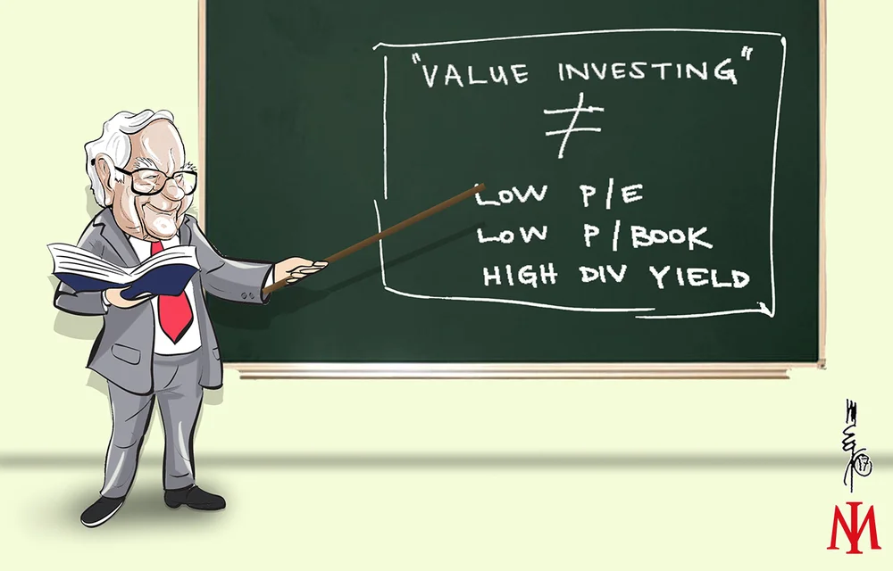

Best investment books in 2022
Investing is a successful approach
to use your money and possibly
increase your fortune . Your money
may grow in value and outpace inflation if you make wise investment
decisions. The power of compounding and the trade-off between risk and
return are the main reasons
investment has a higher growth potential.
In topbooksinvestig.com you will
find the best information about the different investment books. There
are different types of books and we will cover all of them:
- Value Investing
books
-
Technical analysis books
- Psycology for invesment books
-
Indexing & Market Efficiency
books
-
Short Selling
books
-
Asset Allocation
books
-
Traiding Strategy
books
-
Contrarian Investing
books
-
Long Term Strategies
books
-
Options
books
-
Management Evaluation
books
Value investing

Value investing is an investment strategy that involves the use of
fundamental analysis to find securities that are selling below their perceived intrinsic
value. While there is no single way to calculate intrinsic value,
analysts and investors commonly use
measures such as a stock's price-to-earnings (P/E) ratio or
price-to-book (P/B) ratio
>to identify value stocks. A value investing strategy is generally
contrasted with a growth investing strategy, which seeks to find
stocks with the best ability to grow their earnings over time. As a
result, value stocks generally pay dividends and have lower relative
P/E multiples,
whereas growth stocks generally do not pay dividends and have higher
P/E multiples.
In this page you will find the best books of
Value Investing
Technical analysis

Based on market data,
technical analysis is a tool or strategy used to forecast the
likely future price movement of a security, such as a stock or currency pair. The idea that all
market participants' aggregate buying and selling accurately reflects
all pertinent information regarding a traded security and subsequently
assigns a fair market value to the security is the basis for the
legitimacy of technical analysis.
Technical traders think that
the most accurate predictor of future price action is the market's
recent or current price action.
Technical traders are not the only ones that employ technical
analysis. Many fundamental traders utilize technical analysis to
identify favorable, low-risk buy entry price levels after using
fundamental analysis to decide whether to purchase into a market.
In this page you will find the best books of
Technical analysis
Psycology for invesment

Psychology informs us that people are biased, mistaken, and
susceptible to perceptual illusions when processing information. Therefore, it stands to reason that
bias, inaccuracy, and perceptual illusions will also affect our
financial judgments.
The primary lesson of behavioural finance, which supports this
claim, is that psychology genuinely permeates every aspect of the
financial world.
According to conventional financial theory, markets are
efficient, investors are logical, and risk alone determines expected
profits.
Behavioral finance theory, on the other hand, views investors as
typical and markets as inefficient,
with projected returns influenced by more than just risk—emotional
variables, for instance, play a significant role.
In
actuality, this implies that even when we think we are making logical,
reasoned decisions, feelings like fear and greed can overcome them and
put our wise investing decisions in jeopardy. What then can we do to
combat these negative feelings?
In this page you will find the best books of
Psycology for invesment
Indexing & Market Efficiency

NDEX investing is a good way to control risk and generate steady
returns. The strategy's proponents avoid active investing since,
according to contemporary financial theory, it is impossible to
"beat the market" after accounting for trading fees and taxes.
Index funds often offer lower management costs and expense ratios
(ERs) than actively managed funds since index investing adopts a
passive strategy. Without a portfolio manager, tracking the market is
straightforward, which enables providers to charge reasonable costs.
Because they execute trades less frequently than active funds,
index funds also tend to be more tax-efficient.
More importantly,
diversifying against risks through index investing is a powerful strategy. An index fund is made
up of many different investments as opposed to just a handful. By
doing this, unsystematic risk associated with a particular business or
sector is reduced while still maintaining expected profits.
The S&P 500 is the most popular
benchmark for many index investors to compare performance against
because it represents the state of the American economy. Other
well-known index funds monitor the performance of the corporate bond
market as well as the Dow Jones Industrial Average (DJIA).
In this page you will find the best books of
Indexing & Market Efficiency
Short Selling
A trading or investment method known as
short selling makes predictions
about the price drop of a stock or other security. Only seasoned
traders and investors should use this sophisticated approach.
Investors or portfolio managers may use short selling as a hedge
against the downside risk of a long position in the same security or a comparable one, while traders may use it
for speculation. Speculation is a sophisticated form of trading that
entails a high potential risk. A more frequent transaction is hedging,
which involves taking an
opposite position to lessen risk
exposure.
In short selling, a position is established by
obtaining borrowed shares of a stock or other asset, the value of which the investor anticipates falling. Afterward, the
investor sells these borrowed shares to buyers who are prepared to pay
the going rate.
he trader is hoping that the price will continue to fallT so they may buy the borrowed shares for less money before they have
to be returned. Since the price of any asset might increase to
infinity, the risk of loss on a short sale is essentially limitless.
In this page you will find the best books of
Short Selling
Asset Allocation
The process of allocating your investments among various assets, such as stocks, bonds, and cash, is known as
asset allocation.
The choice of how to allocate your assets
is a private one. Depending on how long you have to invest and how
much risk you can bear, the allocation that is ideal for you changes
over the course of your life. Among the things to think about are
your:
- Time Scale. Your time horizon
is how long you need to invest—in months, years, or decades—to reach
your financial objective. Longer-term investors might feel at ease
making riskier or more variable investments. People who have a
narrower time horizon could choose to assume less risk.
- Risk acceptance. Your capacity
and readiness to lose part or all of your initial investment in
exchange for potentially higher returns is known as your risk
tolerance.
In this page you will find the best books of
Asset Allocation
Trading Strategies
An organized way of purchasing and selling stocks is known as a
trading strategy. A trading
strategy is built upon predetermined
guidelines and standards that
are applied when making trading selections.
Depending on the complexity, a trading strategy may take into account
factors like market cap, technical indicators, fundamental analysis,
industry sector,
evel of portfolio diversification, time horizon or holding period,
risk tolerance, leverage, tax implications, and so on.l Examples of these factors include value vs. growth investing,
technical indicators, technical analysis, fundamental analysis, and
market cap. The most important thing is to develop a trading strategy
based on objective facts and research and to stick to it religiously.
In addition, as market conditions or
personal objectives change, a
trading strategy should be routinely reevaluated and adjusted.
In this page you will find the best books of
Traiding Strategies
Contrarian Investing
In a
contrarian investment strategy,
investors deliberately buck the direction of the market by selling
when others are buying and purchasing when most investors are selling.
Warren Buffett, chairman and CEO of Berkshire Hathaway, is renowned as
a contrarian investor.
Investors who hold a contrary opinion think that people who claim the market is rising only do so when they
are completely invested and have no more purchasing power. The market
has reached its pinnacle at this time. Therefore, when forecasters
foresee a decline, they have already sold out and the market can only
rise from here.
In this page you will find the best books of
Contrarian Investing
Long Term Strategies
As long as markets have existed, many investors have tried to
maximize gains and minimize losses
by timing the market.
In theory, investors believe they should buy when prices are low but
rising and sell when prices are high but falling. However, to time the
market perfectly, you have to be successful twice: once when you buy
and then again when you sell.
Getting the timing right on both ends is doubly difficult. Plus, every time you trade, you incur costs such as brokerage fees
and taxes, which can quickly reduce any additional returns you’ve
gained on both the purchase and the sale.
Instead of trying to time the market, consider spending time in the
market using a buy-and-hold strategy, where you buy stocks and other securities and hold on to them
regardless of market fluctuations. Following are a few reasons you may
want to explore implementing this long-term investing strategy. In
this page you will find the best books of
Long Term Strategies
Options Trading
Options are contracts that give
the bearer the right—but not the obligation—to either buy or sell an
amount of some underlying asset at a predetermined price at or before
the contract expires. Like most other asset classes, options can be
purchased with brokerage investment accounts.
Options are powerful because they can enhance an individual’s
portfolio. They do this through added income, protection, and even
leverage. Depending on the situation, there is usually an option
scenario appropriate for an investor’s goal.
A popular example would be using options as an effective hedge
against a declining stock market to limit downside losses.
In fact, options were really invented for hedging purposes. Hedging
with options is meant to reduce risk at a reasonable cost. Here, we
can think of using options like an insurance policy. Just as you
insure your house or car, options can be used to insure your
investments against a downturn.
In this page you will find the best books of
Options Trading
Management Evaluaction
Most investors realize that it's important for a company to have a good management team. The problem is that evaluating management is difficult. So many aspects of the job are intangible. It's clear that investors can't always be sure of a company by only poring over financial statements. Fallouts such as Enron, Worldcom, and Imclone have demonstrated the importance of emphasizing the qualitative aspects of a company. In this page you will find the best books of Management Evaluaction